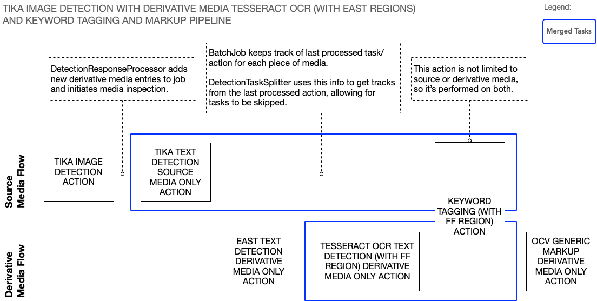

NOTICE: This software (or technical data) was produced for the U.S. Government under contract, and is subject to the Rights in Data-General Clause 52.227-14, Alt. IV (DEC 2007). Copyright 2021 The MITRE Corporation. All Rights Reserved.
Introduction
This guide covers the derivative media feature, which allows users to create pipelines where a component in one of the initial stages of the pipeline generates one or more derivative (aka child) media from the source (aka parent) media. A common scenario is to extract images from PDFs or other document formats. Once extracted, the Workflow Manager (WFM) can perform the subsequent pipeline stages on the source media (if necessary) as well as the derivative media. This differs from typical pipeline execution, which only acts on one or more pieces of source media.
Component actions can be configured to only be performed on source media or derivative media. This is often necessary
because the source media has a different media type than the derivative media, and therefore different actions are
required to process each type of media. For example, PDFs are assigned the UNKNOWN media type (since the WFM is not
designed to handle them in any special way), while the images extracted from a PDF are assigned the IMAGE media type.
An action for the TikaTextDetection component can process the UNKNOWN source media to generate TEXT tracks by
detecting the embedded raw character data in the PDF itself, while an action for the TesseractOCRTextDetection component
can process the IMAGE derivative media to generate TEXT tracks by detecting text in the image data.
Text Detection Example
Consider the following diagram which depicts a pipeline to accomplish generating TEXT tracks for PDFs which contain
embedded raw character data and embedded images with text:

Each block represents a single action performed in that stage of the pipeline. (Technically, a pipeline consists of
tasks executed in sequence, but in this case each task consists of only one action, so we just show the actions.)
Actions that have SOURCE MEDIA ONLY in their name have the SOURCE_MEDIA_ONLY property set to TRUE, which will
result in completely skipping that action for derivative media. The component associated with the action will not
receive sub-job messages and there will be no representation of the action being executed on derivative media in the
JSON output object.
Similarly, actions that have DERIVATIVE MEDIA ONLY in their name have the DERIVATIVE_MEDIA_ONLY property set
to TRUE, which will result in completely skipping that action for source media. Note that setting both properties
to TRUE will result in skipping the action for both derivative and source media, which means it will never be
executed. Not setting either property will result in executing the action on both source and derivative media, as you
see in the diagram with the KEYWORD TAGGING action.
Note that the actions shown in the source media flow and derivative media flow are not executed at the same time. The flows are shown in different rows in the diagram to illustrate the logical separation, not to illustrate concurrency. To be clear, each action in the pipeline is executed sequentially. If an action is missing from a flow it just means that no sub-job messages are generated for that kind of media during that stage of the pipeline. If an action is shown in both flows then sub-jobs will be performed on both the source and derivative media during that stage.
To break down each stage of this pipeline:
TIKA IMAGE DETECTION ACTION: The TikaImageDetection component will extract images from PDFs (or other document formats) and place them in$MPF_HOME/share/tmp/derivative-media/<job-id>. OneMEDIAtrack will be generated for each image and it will haveDERIVATIVE_MEDIA_TEMP_PATHandPAGE_NUMtrack properties.- If remote storage is enabled, the WFM will upload the objects to the object store after this action is performed. Refer to the Object Storage Guide for more information.
- The WFM will perform media inspection on the images at this time.
- Each piece of derivative media will have a parent media id set to the media id value of the source media. It will
appear as
media.parentMediaIdin the JSON output object. For source media the value will be -1. - Each piece of derivative media will have a
media.mediaMetadataproperty ofIS_DERIVATIVE_MEDIAset toTRUE. The metadata will also contain thePAGE_NUMproperty. TIKA TEXT DETECTION SOURCE MEDIA ONLY ACTION: The TikaTextDetection component will generateTEXTtracks by detecting the embedded raw character data in the PDF.EAST TEXT DETECTION DERIVATIVE MEDIA ONLY ACTION: The EastTextDetection component will generateTEXT REGIONtracks for each text region in the extracted images.TESSERACT OCR TEXT DETECTION (WITH FF REGION) DERIVATIVE MEDIA ONLY ACTION: The TesseractOCRTextDetection component will generateTEXTtracks by performing OCR on the text regions passed forward from the previous EAST action.KEYWORD TAGGING (WITH FF REGIONS) ACTION: The KeywordTagging component will take theTEXTtracks from the previousTIKA TEXTandTESSERACT OCRactions and perform keyword tagging. This will add theTAGS,TRIGGER_WORDS, andTRIGGER_WORDS_OFFSETproperties to each track.OCV GENERIC MARKUP DERIVATIVE MEDIA ONLY ACTION: The Markup component will take the keyword-taggedTEXTtracks for the derivative media and draw bounding boxes on the extracted images.
Task Merging
The large blue rectangles in the diagram represent tasks that are merged together. The purpose of task merging is to consolidate how tracks are represented in the JSON output object by hiding redundant track information, and to make it appear that the behaviors of two or more actions are the result of a single algorithm.
For example, keyword tagging behavior is supplemental to the text detection behavior. It's more important that TEXT
tracks are associated with the algorithm that performed text detection than the KEYWORDTAGGING algorithm. Note that in
our pipeline only the KEYWORD TAGGING action has the OUTPUT_MERGE_WITH_PREVIOUS_TASK property set to TRUE. It has
a similar effect in the source media flow and derivative media flow.
In the source media flow the TIKA TEXT action is at the start of the merge chain while the KEYWORD TAGGING action is
at the end of the merge chain. The tracks generated by the action at the end of the merge chain inherit the algorithm
and track type from the tracks at the beginning of the merge chain. The effect is that in the JSON output object the
tracks from the TIKA TEXT action will not be shown. Instead that action will be listed under TRACKS MERGED. The
tracks from the KEYWORD TAGGING action will be shown with the TIKATEXT algorithm and TEXT track type:
"output": {
"TRACKS MERGED": [
{
"source": "+#TIKA IMAGE DETECTION ACTION#TIKA TEXT DETECTION SOURCE MEDIA ONLY ACTION",
"algorithm": "TIKATEXT"
}
],
"MEDIA": [
{
"source": "+#TIKA IMAGE DETECTION ACTION",
"algorithm": "TIKAIMAGE",
"tracks": [ ... ]
}
],
"TEXT": [
{
"source": "+#TIKA IMAGE DETECTION ACTION#TIKA TEXT DETECTION SOURCE MEDIA ONLY ACTION#KEYWORD TAGGING (WITH FF REGION) ACTION",
"algorithm": "TIKATEXT",
"tracks": [ ... ]
}
]
}
In the derivative media flow the TESSERACT OCR action is at the start of the merge chain while the KEYWORD TAGGING
action is at the end of the merge chain. The effect is that in the JSON output object the tracks from
the TESSERACT OCR action will not be shown. The tracks from the KEYWORD TAGGING action will be shown with
the TESSERACTOCR algorithm and TEXT track type:
"output": {
"NO TRACKS": [
{
"source": "+#EAST TEXT DETECTION DERIVATIVE MEDIA ONLY ACTION#TESSERACT OCR TEXT DETECTION (WITH FF REGION) DERIVATIVE MEDIA ONLY ACTION#KEYWORD TAGGING (WITH FF REGION) ACTION#OCV GENERIC MARKUP DERIVATIVE MEDIA ONLY ACTION",
"algorithm": "MARKUPCV"
}
],
"TRACKS MERGED": [
{
"source": "+#EAST TEXT DETECTION DERIVATIVE MEDIA ONLY ACTION#TESSERACT OCR TEXT DETECTION (WITH FF REGION) DERIVATIVE MEDIA ONLY ACTION",
"algorithm": "TESSERACTOCR"
}
],
"TEXT": [
{
"source": "+#EAST TEXT DETECTION DERIVATIVE MEDIA ONLY ACTION#TESSERACT OCR TEXT DETECTION (WITH FF REGION) DERIVATIVE MEDIA ONLY ACTION#KEYWORD TAGGING (WITH FF REGION) ACTION",
"algorithm": "TESSERACTOCR",
"tracks": [ ... ]
}
],
"TEXT REGION": [
{
"source": "+#EAST TEXT DETECTION DERIVATIVE MEDIA ONLY ACTION",
"algorithm": "EAST",
"tracks": [ ... ]
}
]
}
Note that a MARKUP action will never generate new tracks. It simply fills out the media.markupResult field in the
JSON output object (not shown above).
Output Last Task Only
If you want to omit all tracks from the JSON output object but the respective TEXT tracks for the source and
derivative media, then in you can also set the OUTPUT_LAST_TASK_ONLY job property to TRUE. Note that the WFM only
considers tasks that use DETECTION algorithms as the final task, so MARKUP is ignored. Setting this property will
result in the following JSON for the source media:
"output": {
"TRACKS SUPPRESSED": [
{
"source": "+#TIKA IMAGE DETECTION ACTION",
"algorithm": "TIKAIMAGE"
},
{
"source": "+#TIKA IMAGE DETECTION ACTION#TIKA TEXT DETECTION SOURCE MEDIA ONLY ACTION",
"algorithm": "TIKATEXT"
}
],
"TEXT": [
{
"source": "+#TIKA IMAGE DETECTION ACTION#TIKA TEXT DETECTION SOURCE MEDIA ONLY ACTION#KEYWORD TAGGING (WITH FF REGION) ACTION",
"algorithm": "TIKATEXT",
"tracks": [ ... ]
}
]
}
And the following JSON for the derivative media:
"output": {
"NO TRACKS": [
{
"source": "+#EAST TEXT DETECTION DERIVATIVE MEDIA ONLY ACTION#TESSERACT OCR TEXT DETECTION (WITH FF REGION) DERIVATIVE MEDIA ONLY ACTION#KEYWORD TAGGING (WITH FF REGION) ACTION#OCV GENERIC MARKUP DERIVATIVE MEDIA ONLY ACTION",
"algorithm": "MARKUPCV"
}
],
"TRACKS SUPPRESSED": [
{
"source": "+#EAST TEXT DETECTION DERIVATIVE MEDIA ONLY ACTION",
"algorithm": "EAST"
},
{
"source": "+#EAST TEXT DETECTION DERIVATIVE MEDIA ONLY ACTION#TESSERACT OCR TEXT DETECTION (WITH FF REGION) DERIVATIVE MEDIA ONLY ACTION",
"algorithm": "TESSERACTOCR"
}
],
"TEXT": [
{
"source": "+#EAST TEXT DETECTION DERIVATIVE MEDIA ONLY ACTION#TESSERACT OCR TEXT DETECTION (WITH FF REGION) DERIVATIVE MEDIA ONLY ACTION#KEYWORD TAGGING (WITH FF REGION) ACTION",
"algorithm": "TESSERACTOCR",
"tracks": [ ... ]
}
]
}
Developing Media Extraction Components
The WFM is not limited to working only with the TikaImageDetection component. Any component can be designed to generate
derivative media. The requirement is that it must generate MEDIA tracks, one piece of derivative media per track.
Minimally, each track must have a DERIVATIVE_MEDIA_TEMP_PATH property set to the location of the media. By convention,
the media should be placed in a top-level directory of the form $MPF_HOME/share/tmp/derivative-media/<job-id>. When
the job is done running, the media will be moved to persistent storage in $MPF_HOME/share/derivative-media/<job-id> if
remote storage is not enabled.
Specifically, TikaImageDetection uses paths of the
form $MPF_HOME/share/tmp/derivative-media/<job-id>/tika-extracted/<guid>/image<index>.<ext>. The <guid> part ensures
that the results of two different actions executed within the same job on the same source media, or actions executed
within the same job on different source media files, do not conflict with each other. A new <guid> is generated for
each invocation of GetDetections() on the component.
Your media extraction component can optionally include other track properties. These will get added to the derivative
media metadata. For example, TikaImageDetection adds the PAGE_NUM property.
Note that although this guide only talks about derivative images, your component can generate any kind of media. Be sure that components in the subsequent pipeline stages can handle the media type detected by WFM media inspection.
Default Pipelines
OpenMPF comes with some default pipelines for detecting text in documents and other pipelines for detecting faces in documents. Refer to the TikaImageDetection descriptor.json.